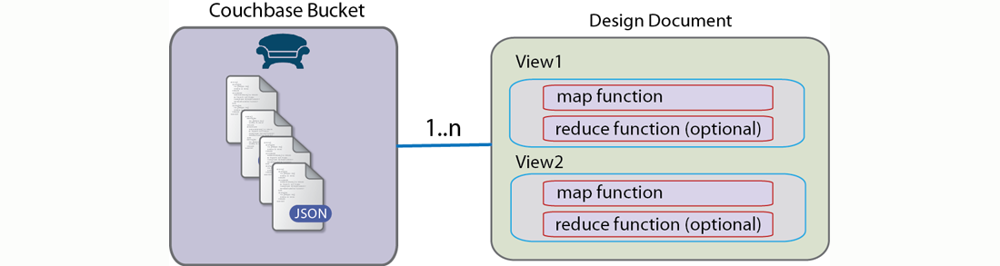

Understanding views
If you are coming from a relational database background and are familiar with SQL, you know how to use the query language to specify exactly what data you want out of the database. With Couchbase Server, you use views to perform these types of operations.
You can use views to extract, filter, aggregate, and find information. View are essentially functions you write that Couchbase Server uses to find information or perform calculations on information. Finding information with views is a two-stage process based on a technique called MapReduce.
First you create a view by you providing a map function that filters entries for certain information and can extract information. The result of a map function is an ordered list of key-value pairs, called an index. The results of map functions are persisted onto disk by Couchbase Server and are updated incrementally as documents change.
You can also provide an optional reduce function that can sum, aggregate, or perform other calculations on information.
Couchbase Server stores one or more view functions as strings in a single JSON document called a design document. Each design document can be associated with a data bucket. The following diagram shows the relationship between these logical elements:
After you have your view functions, the next step is to query a view to actually get back data from Couchbase Server. When you query a view, you are asking for results based on that view. Based on the functions in a view, Couchbase Server will create a result set, which contains key value pairs. Each key and value in the result set is determined by the logic you provide in your views functions. Imagine you have several thousand contacts in Couchbase Server and you want to get all the phone numbers which begin with the prefix 408. Given a view function that defines this, Couchbase Server would return results that appears as follows:
In this case our results are an ordered list of key and values where the keys are phone numbers starting with a 408, and we have no value in our results except the ids of documents containing matching prefixes. The keys will be sorted based on the key value in ascending, alphabetical order. We can potentially use these ids to lookup more information from the documents containing the 408 phone number such as name, city, or address. We could have also used the map function to provide values from matching entries in our index, such as names.
Couchbase Server will create an index based on a view for all items that have been persisted to disk. There may be cases where you want to ensure an item has been persisted to disk and will therefore appear in a result set when you query a view. Couchbase SDKs provide helper methods, collectively referred to as observe functions to get more information about an item you want to persist and then index. For more information, see Monitoring data using observe.
Notice also that Couchbase Server generates an index and returns a result set when you actually query the view. Building an index is a resource-intensive process that you may not want to trigger each time you query a view. There may be cases where you will want Couchbase Server to explicitly rebuild an index and include any new documents that have been persisted since your last query; in other cases, you may not care about retrieving an index that contains the most recent items. Couchbase SDKs enable you to specify if you want to query and refresh the index to include current items, or if you only want the index that is currently stored. For more information about this topic, see Building an index.
For more detailed information about views, including how and when Couchbase Server creates an index based on views, see Views and indexes.